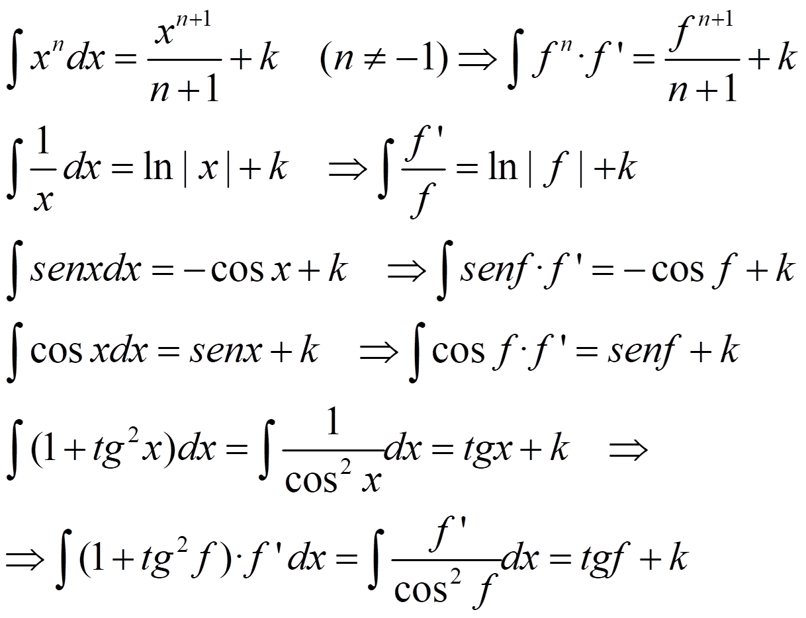

Sea f una función, se dice que F es una primitiva de f si F’ = f.
NOTA: si F es una primitiva de f →F + k (k Є R) es una primitiva de f.
La integral indefinida de f es el conjunto de primitivas de f:


Integrales inmediatas:

INTEGRAL DEFINIDA
Vamos a calcular el área bajo la gráfica de una función en un intervalo, el área de R.

Para conseguirlo, hacemos una partición, Pn, del intervalo [a,b] en n subintervalos:
a = x0<x1<x2<……<xn = b
Entonces, tenemos dos opciones para calcular el área:


sPn(f)≤ área (R) ≤ SPn(f)


Si hacemos el límite cuando n tiende a ∞ y ambos son iguales, entonces:

se llama integral definida de f entre a y b, y se dice que f es integrable en [a,b]
PROPIEDADES:

Teorema fundamental del Cálculo.- Si f es continua en [a,b], la función F definida en [a,b] como:

es derivable en (a,b) y F’(x) = f(x)
NOTA: f derivable→f continua→f integrable
Regla de Barrow.-
Si f es continua en [a,b] y F es una primitiva de f en [a,b], entonces:

Cálculo de áreas:
- Si f es positiva:

- Si f es negativa:

- Si f es positiva y negativa, tenemos que encontrar sus ceros en el intervalo : a1, a2, … ,ak / f(ai) = 0. Y entonces:

– Si f ≤ g o f ≥ g en el intervalo

– De otro modo, averiguamos a1, a2, … ,ak in [a,b] / f(ai) = g(ai). Y entonces: